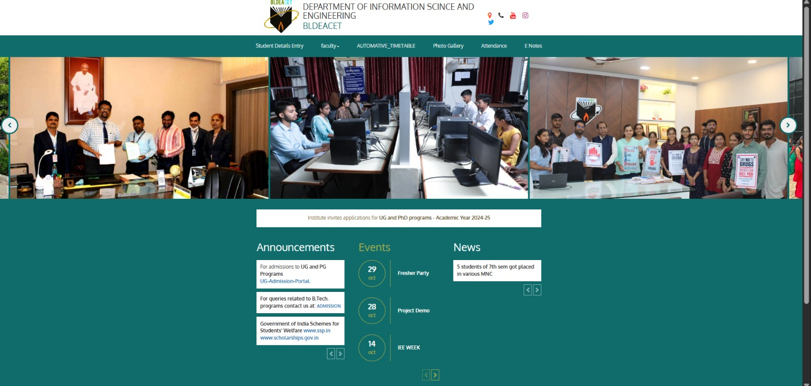
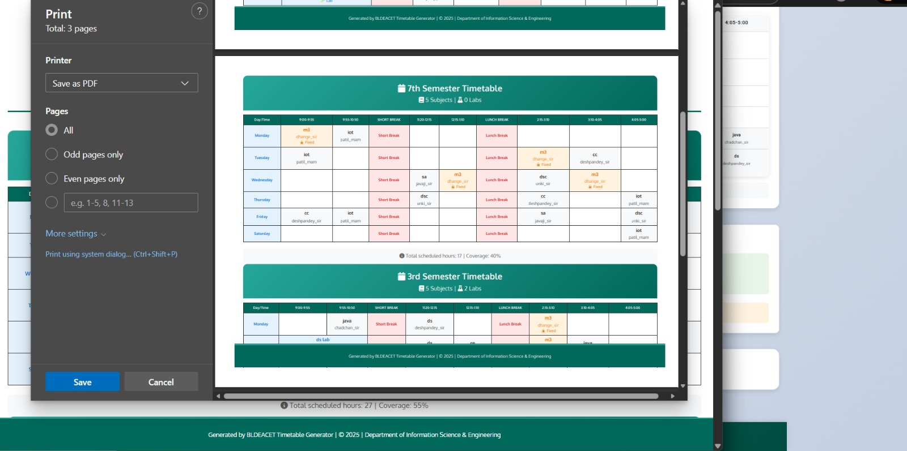
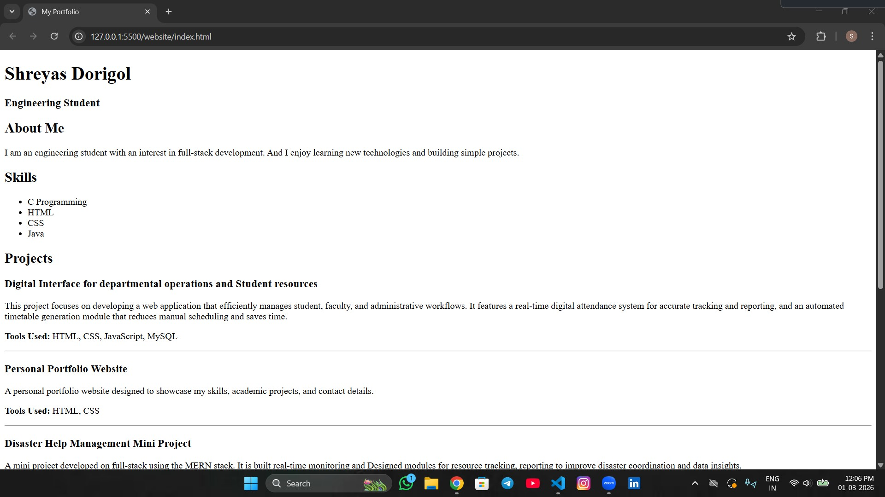
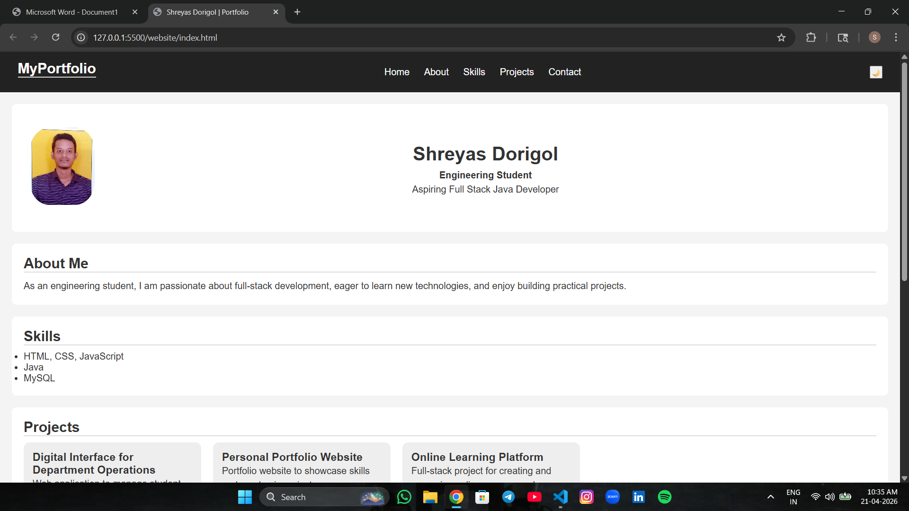

I am an engineering student with an interest in full-stack development. And I enjoy learning new technologies and building simple projects.
This project focuses on developing a web application that efficiently manages student, faculty, and administrative workflows. It features a real-time digital attendance system for accurate tracking and reporting, and an automated timetable generation module that reduces manual scheduling and saves time.
Tools Used: HTML, CSS, JavaScript, MySQL


A personal portfolio website designed to showcase my skills, academic projects, and contact details.
Tools Used: HTML, CSS

A mini project developed on full-stack using the MERN stack. It is built real-time monitoring and Designed modules for resource tracking, reporting to improve disaster coordination and data insights.
Tools Used: Java, MySQL

📧 Email: shreyasdorigol@gmail.com
💼 LinkedIn: View LinkedIn Profile
🧑💻 GitHub: View GitHub Profile